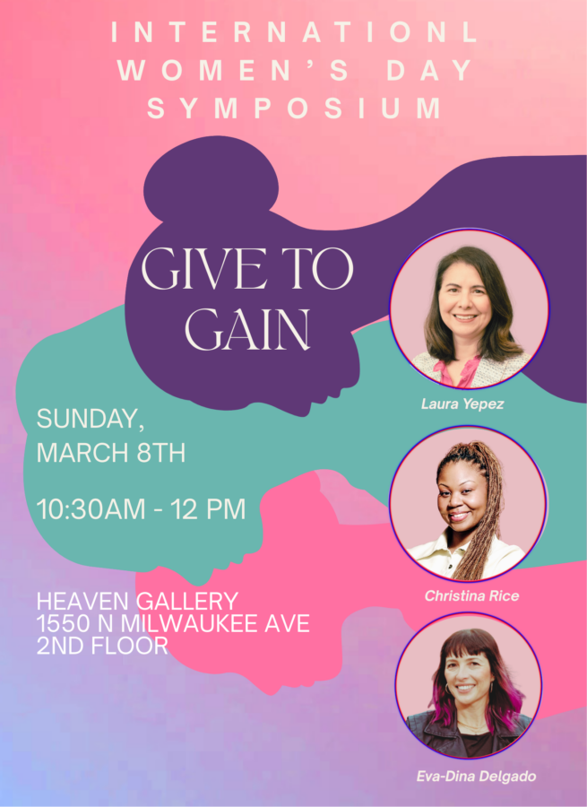

7th annual Women’s History Month Symposium!
To celebrate this year’s Women’s History Month, Heaven Gallery and Equity Arts invite three women that embody generosity, collaboration and equity. This year’s International Women’s Day theme is Give to Gain, encouraging a mindset to forge equality with a focus on giving respect, resources, and a voice. This group embodies giving by leading the way for social change through community building and action. The goal of this event is for women to tell their stories in order to inspire present and future generations. By creating momentum and inspiring interest, we can uplift and empower communities to start their own projects and get involved in elevating female leadership.
Laura Yepez (@1stwardly)
Eva-Dina Delgado (@repdelgado3)
Christina Rice (@withlove_chrissy)
Coffee and pastries will be served, save the date!